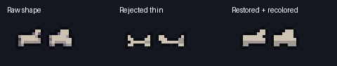

STAGE 10 COMPLETE / REVIEW CANDIDATE / STOPPED BEFORE STAGE 11
Portrait frame kit + restored raw bones
The fuller raw bone shapes are restored exactly, with color cleanup only. The new portrait kit uses repeatable silver rails, purple jewel corners and separate clamps. Earlier approved art and all non-frame placements are preserved.
Stage report · Measured checks · Stage09 and bones correction · Draft PR203
Your bones correction

Same raw alpha silhouette. 26×12 native pixels, three opaque colors, unchanged placement and floor contact. Barrel and skull are unchanged.
Actual Unity preview
The Rattlebones specimen uses his unchanged 64×64 source. It is temporary QA artwork, not a gameplay actor. HP fill is a separate runtime probe; no fixed health value is painted into the shell.
Full native Game View · Actual 1080×1920 source-character capture
PixelLab source → native LibreSprite kit
One new focused 64×64 source. Rail profiles retain their native density, with quieter highlights and connected corner sockets. The existing heart is preserved pixel-for-pixel.
Raw source · Generation receipt
Containment test
A 160×247 magenta probe deliberately exceeds the 80×167 recess. Zero changed pixels outside the mask at 1x and 3x. Disabling the mask produces obvious spill, proving the test can catch a broken boundary.
Verified and stopped
Unity visual test: 1 passed, 0 failed. Required Unity validator: SUCCESS. Ten native-composition comparisons match exactly, plus four mask-control captures. Binary alpha, native rail repeats, integer placement, preserved golden images and 221 protected prior-art files.
Stage10 cost exactly 5 authorized generations; cumulative 50. No Stage11, production integration, phone build or merge.